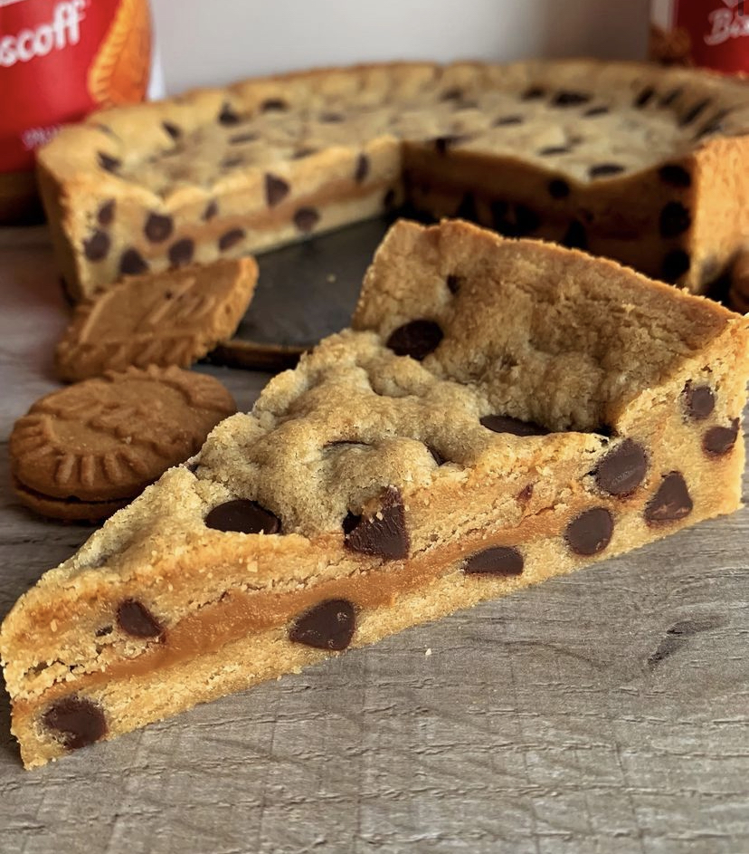

Cookie Pie
Tarif:Diğdem Çelik

Malzemeler
- 200 gr oda sıcaklığında tereyağı
- 300 gr un
- 250 gr esmer şeker
- 1 çay kaşığı vanilya
- 2 adet yumurta sarısı
- 1 çay kaşığı kabartma tozu
- damla çikolata(istenilen miktarda)
- Nutella ya da fıstık ezmesi(iç dolgusu için)
Yapılışı
- İç dolgu malzemesi hariç oda sıcaklığında bulunan tüm malzemeler karıştırılır.
- Yarım saat buzdolabında bekletilir.
- Yeteri kadar bekledikten sonra hamur
ikiye ayrılarak bir parçası derin bir tepsinin tabanına yayılır,
tart tabanı şekli verilir.
- İç kısmı kaplayacak şekilde nutella ya da fıstık ezmesi
ince bir tabana olarak nazikçe sürülür.
- Daha sonra, ikinci hamur parçası dışarıda yuvarlak şekilde açılarak tartın üstü üstü kaplanır.
Artan damla çikolatalar üzerine yerleştirilebilir.
- Önceden ısıtılmış fanlı fırında 15-20 dakika kadar pişirilir.
Süre bitiminde yumuşak bir kıvamda olacaktır. Tepsiyi fırından alıp üzerini örterek soğumaya bırakıldıktan
sonra, kabukları
sert, içi sakızımsı o muhteşem dokuya ulaşacaktır.
Afiyet olsun!